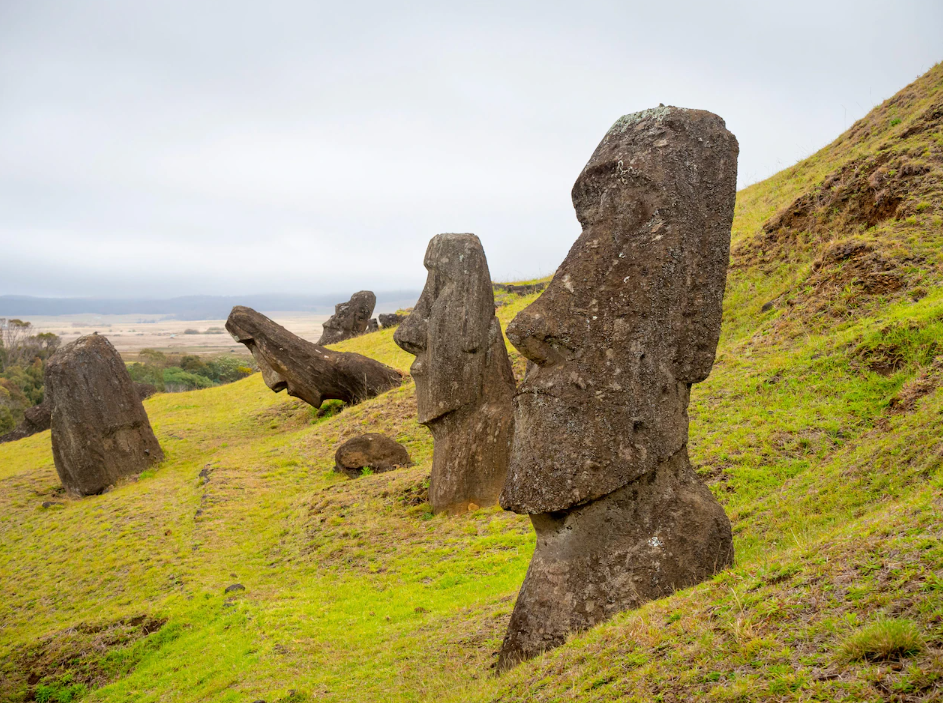
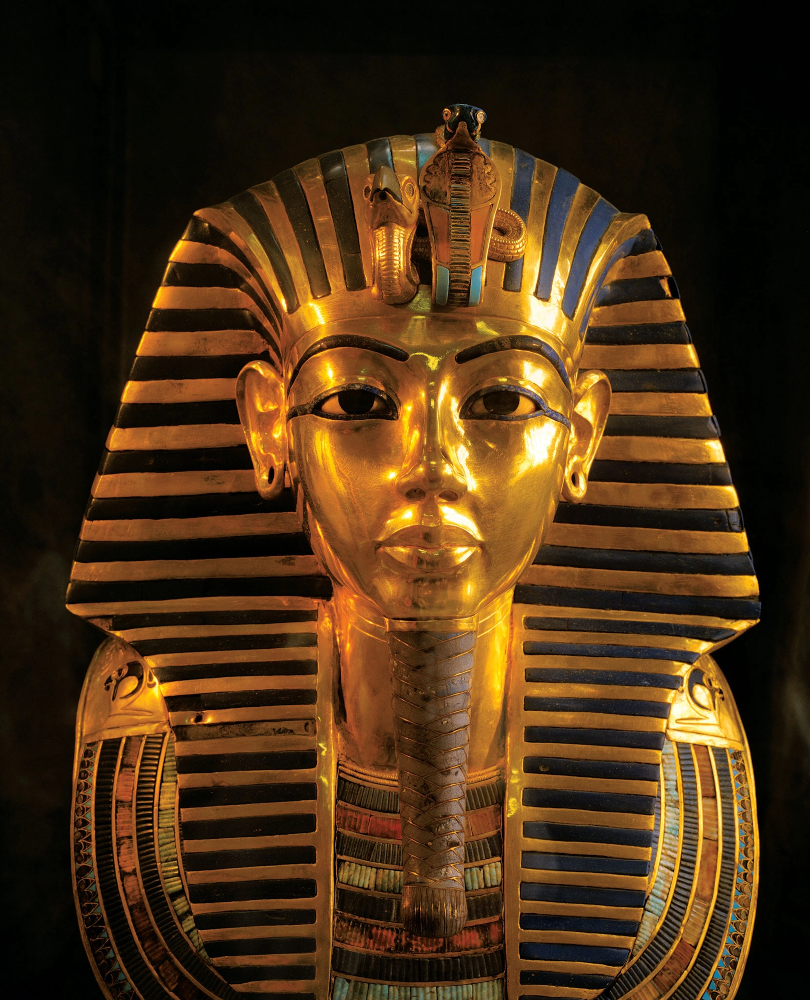
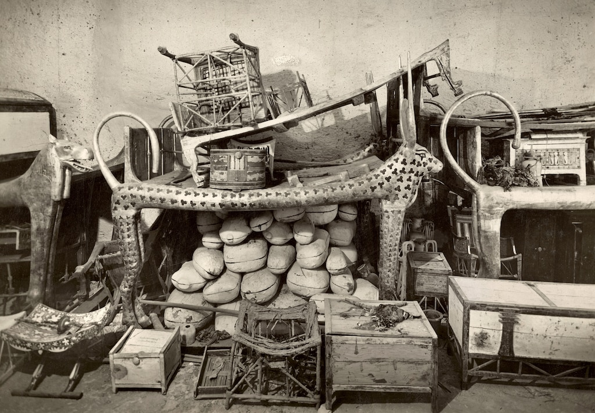
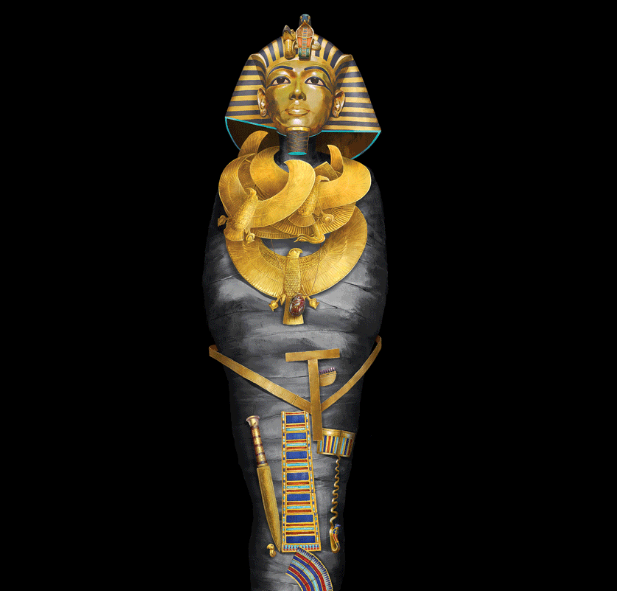
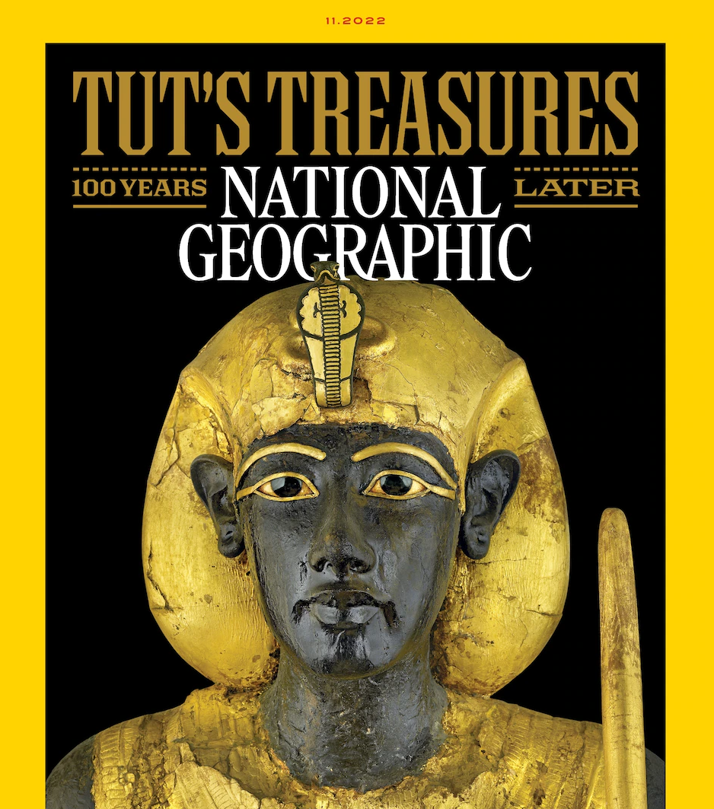

Today's Picks

History & Culture
Easter Island's iconic statues remain at risk after fire

History & Culture
Who was King Tut?
History Coronavirus Coverage
Omicron subvariants BQ.1 and BQ.1.1 may soon take over the U.S.

Magazine
How was King Tut's tomb discovered 100 years ago?

Magazine
King Tut's mummy hid many treasures. This graphic unwraps them

Photography Behind the cover
How an obscure statue becmae our face of a King Tut anniversary
See more